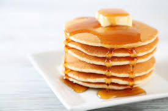

Panqueques caceros
Estos Panqueques son una receta fácil y perfeca
para el desayuno.
Ingredientes:
- 1 taza de harina
- 1 huevo
- 1 taza de leche
- 2 cucharaditas de azúcar
- 1 cucharadita de vainilla
- 1 pizca de sal
- 1 cucgaradita de polvo de hornear
Pasos para preparar
- Mezcla la harina, azúcar. polvo de hornear y sal en un bowl.
- Añade el huevo y la leche hasta tener una mezcla homogénea.
- Calienta un sartén y vierte un poco de la mezcla.
- Cocina hasta que salgan burbujas y voltea.
- Sirve caliente con miel de maple, frutas o mantequilla.
Imagen del plato

Información Nutricional
| Componente |
Cantidad |
| Calorías |
180 kcal |
| Proteínas |
6 gr |
| Carbohídratos |
25 gr |
| Grasas |
5 gr |
| Azucares |
10 gr |
¿Quieres ver cómo se prepara? Mira este video en YouTube
Como lo puedes acompañar
Estes esquisitos y deliciosos panqueques lo puedes acompañar en el momento del lochesito, con una taza de café,
con un buen vaso de jugo de melón
Donde lo puedes encontrar
Si no deseas preparlo tu mismo, lo puedes encontrar en nuestro local ubicado en jr. los magos
referencia la gran estación
Contactenos y separa su reserva